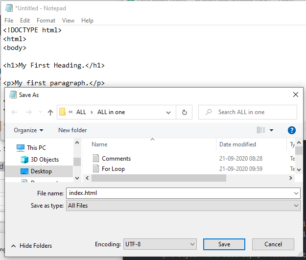

Hypertext Markup Language (HTML) is the standard markup language for documents designed to be displayed in a web browser. It can be assisted by technologies such as Cascading Style Sheets (CSS) and scripting languages such as JavaScript.
You can use notepadin PC. Use TextEdit in MAC.
"<!DOCTYPE html>
<html>
<body>
<h1>My First Heading.</h1>
<p>My first paragraph.</p>
</body>
</html>>Name the file "index.htm" and set the encoding to UTF-8 (which is the preferred encoding for HTML files).
See how browser will ignore whitespace, multiple lines in paragraph. If you want to display a poem use pre tag
<!DOCKTYPE html>
<html>
<body>
<head>
<h1>My First Heading.</h1>
<p> Browser will ignore lines in source code
And it will show all contain in one line. If you resize you browser
then youn will see change in lines.</p>
</head>
</body>
</html>
<!DOCKTYPE html>
<html>
<body>
<head>
<p>The pre tag to use spaces and line breaks:</p> <
!-- If youn want to write poem use <pre>tag-->
<pre>
Nature is everywhere.
Nature is everywhere you go.
Everything that lives and grows
is nature.
Animals
Big and small.
Nature is plants that grow so tall.
Nature is beautiful in every way.
Wonderful, exciting
And needs our care.
So listen, learn and do your part to keep Nature
Beautiful forever.
</pre>
</head>
</body>
</html>